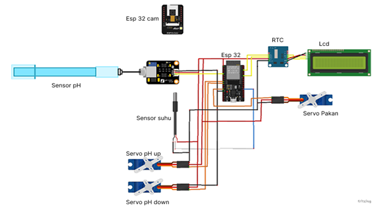

1. Pendahuluan
Perkembangan teknologi di bidang Internet of Things (IoT) telah mengalami kemajuan pesat, ditandai dengan munculnya berbagai inovasi seperti sustainable IoT yang berfokus pada efisiensi energi dan pengurangan limbah, AI-enhanced IoT yang mengintegrasikan kecerdasan buatan untuk prediksi dan personalisasi, serta kesiapan teknologi 6G yang mendukung kecepatan dan konektivitas tinggi antarperangkat. IoT sendiri merupakan sistem yang memungkinkan perangkat pintar saling terhubung dan bertukar data secara otomatis, seperti sistem pengatur suhu rumah, pemantauan kesehatan pasien secara real-time, hingga pemodelan digital twin dan integrasi blockchain untuk keamanan data (Lusita, 2023).
Dalam konteks budidaya ikan mujair di Indonesia, pemanfaatan teknologi IoT masih sangat terbatas, sementara permasalahan klasik seperti pemantauan kualitas air secara manual masih menjadi kendala utama. Peternak sering menghadapi kesulitan dalam mengontrol pH, suhu, dan kualitas air, padahal ketiga faktor ini sangat memengaruhi pertumbuhan dan kelangsungan hidup ikan (Chen et al., 2022). Ketergantungan pada metode pemeliharaan tradisional membuat proses pemantauan tidak efisien dan rawan keterlambatan dalam merespon perubahan lingkungan yang bisa menyebabkan penurunan produktivitas bahkan kematian ikan (Tsai et al., 2022). Selain itu, keterbatasan tenaga kerja dan tidak adanya sistem pemantauan daring yang dapat menjadwalkan pengawasan secara rutin, semakin memperbesar potensi risiko tersebut.
2. Metodologi
Alur penelitian ini disusun secara sistematis menggunakan metode Waterfall, di mana setiap tahap diselesaikan sebelum berlanjut ke tahap berikutnya. Pendekatan ini memastikan pengembangan sistem berjalan terstruktur, mulai dari identifikasi masalah, perancangan, implementasi, hingga pemeliharaan. Diagram berikut menggambarkan alur penelitian secara visual untuk memudahkan pemahaman tahapan yang dilakukan.
3. Penjelasan gambar Metode Waterfall
Berdasarkan gambar di atas, alur penelitian ini terdiri dari tujuh tahapan utama. Proses dimulai dari identifikasi masalah, yaitu mengenali kendala petambak seperti pemantauan kualitas air yang tidak efisien, pemberian garam manual, dan kurangnya notifikasi kondisi kolam kepada pemilik. Selanjutnya, pada tahap analisis kebutuhan, dikumpulkan data terkait kebutuhan pengguna, pemilihan sensor, mikrokontroler, dan parameter penting lainnya. Setelah itu, dilakukan desain sistem berupa rancangan skematik perangkat keras dan antarmuka pemantauan jarak jauh. Tahap implementasi meliputi perakitan perangkat, pemrograman sensor, dan integrasi ke platform IoT. Pengujian dilakukan untuk memastikan keakuratan data, stabilitas konektivitas, dan efektivitas sistem otomatisasi. Sistem kemudian diterapkan langsung di tambak ikan dan dilanjutkan dengan pelatihan pengguna. Terakhir, pemeliharaan dilakukan secara berkala untuk evaluasi kinerja, penggantian komponen yang rusak, dan pembaruan sistem agar tetap optimal.
4. Kebutuhan Perangkat Keras dan Perangkat Lunak
Adapun perangkat keras (Hardware) yang dibutuhkan pada Perancangan Alat Montoring Dan Pengendalian Budidaya Ikan Nila Berbasi IoT sebagai berikut.
- Mikrokontroler esp 32
- LCD I2C
- Esp 32 cam
- Stepdown 20A
- Sensor pH
- Sensor Suhu
- Servo
- Kabel Jumper
- RTC
Perangkat lunak (software) yang digunakan dalam perancangan alat monitoring dan pengendalian budidaya ikan nila berbasis IoT meliputi berbagai tools yang mendukung proses pengembangan sistem secara menyeluruh. Platform IoT seperti Blynk digunakan sebagai media monitoring untuk pemantauan data kualitas air secara real-time, sedangkan aplikasi berbasis web atau mobile menampilkan informasi kondisi kolam kepada pengguna. Selain itu, perangkat lunak pemrograman seperti Arduino IDE digunakan untuk mengontrol sensor dan aktuator pada mikrokontroler, sementara Fritzing dipakai untuk merancang skema rangkaian elektronik, dan Draw IO digunakan untuk membuat flowchart serta diagram sistem. Database juga diterapkan untuk menyimpan data historis pemantauan, sedangkan algoritma pemrosesan data digunakan untuk menganalisis perubahan kualitas air secara otomatis dan mengirimkan notifikasi kepada pemilik peternakan, sehingga sistem ini mampu berjalan secara efisien dan responsif dalam mendukung budidaya ikan nila.
5. Rangakaian Sistem
Gambar di bawah menunjukkan perancangan sistem secara keseluruhan, di mana ESP32 berperan sebagai pengendali utama yang terhubung dengan berbagai sensor, motor servo untuk pengatur pakan dan pH, RTC untuk mengatur waktu pemberian pakan otomatis sesuai jadwal, serta LCD I2C sebagai penampil nilai sensor secara langsung.
6. Kesimpulan
Berdasarkan penelitian yang telah dilakukan mengenai implementasi teknologi Internet of Things (IoT) dalam sistem budidaya ikan nila atau mujair, dapat disimpulkan bahwa penerapan IoT terbukti efektif dalam pemantauan kondisi lingkungan tambak secara real-time, di mana sensor-sensor yang terintegrasi mampu mengukur parameter penting seperti pH dan suhu dengan akurasi tinggi, sehingga memungkinkan deteksi dini terhadap perubahan yang berpotensi mengganggu kestabilan ekosistem. Selain sebagai alat pemantauan, sistem IoT juga berfungsi sebagai mekanisme pengendalian, di mana sistem notifikasi dan respon otomatis memungkinkan pengambilan langkah mitigasi cepat, seperti penyesuaian dosis bahan penetral untuk menstabilkan pH, sehingga risiko kematian ikan akibat kondisi lingkungan yang tidak ideal dapat diminimalkan. Integrasi sistem notifikasi pada pemantauan kolam dan pengaturan pemberian pakan juga meningkatkan efisiensi pengelolaan tambak, mendukung pengambilan keputusan yang lebih cepat, dan berkontribusi pada peningkatan produktivitas usaha tambak secara keseluruhan.
Full download